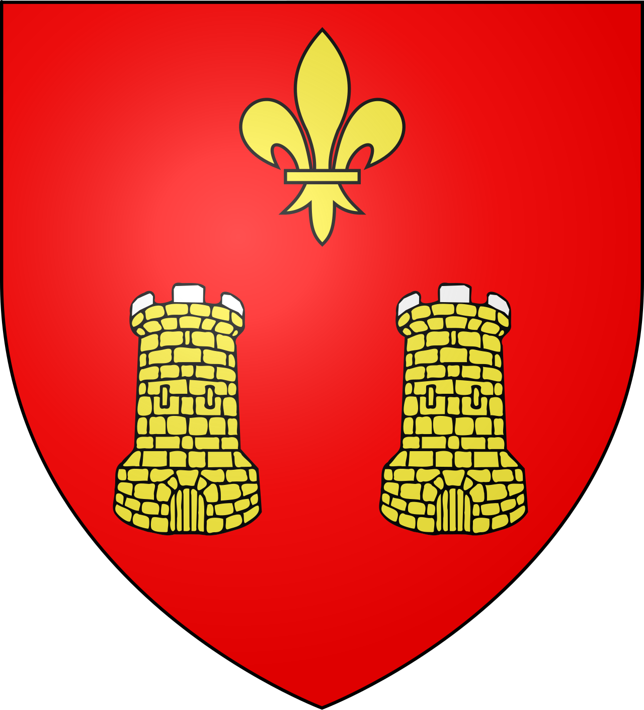
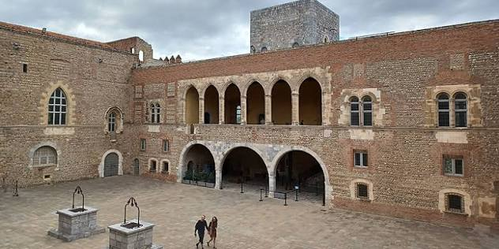

Perpignan
Cité Catalane


⟹ Palais des Rois de Majorque ⟸

Avant Perpignan : Ruscino. L’histoire du territoire perpignanais commence bien avant la ville médiévale. À Château-Roussillon, le site de Ruscino, ancien oppidum protohistorique devenu cité romaine et chef-lieu territorial, témoigne de l’importance stratégique de la plaine du Roussillon dès l’Antiquité. Le site connaît encore une occupation au haut Moyen Âge, à la croisée de la Septimanie et d’al-Andalus.
La naissance de la ville médiévale. Perpignan s’affirme à partir du haut Moyen Âge et devient à la fin du Xe siècle la résidence des comtes de Roussillon. Une première organisation fortifiée se développe, puis la ville s’étend rapidement grâce à sa position sur les routes reliant la péninsule Ibérique, le Languedoc et la Méditerranée.
1172 : dans l’orbite de la couronne d’Aragon. À la mort du dernier comte indépendant de Roussillon, le comté passe au roi d’Aragon. Perpignan s’insère alors plus étroitement dans l’espace politique et économique catalano-aragonais. Sa population, son commerce et ses institutions urbaines se développent fortement aux XIIe et XIIIe siècles.
1276-1344 : capitale continentale du royaume de Majorque. Le partage des possessions de Jacques Ier d’Aragon donne naissance en 1276 au royaume de Majorque. Jacques II fait de Perpignan sa capitale continentale. La ville connaît alors l’une de ses périodes les plus brillantes : essor démographique, commerce méditerranéen, nouveaux quartiers, seconde enceinte urbaine, églises Saint-Jacques, La Réal et Saint-Matthieu, grands édifices civils et construction du Palais des Rois de Majorque.

Retour à l’Aragon et puissance marchande. En 1344, Pierre IV d’Aragon réintègre le royaume de Majorque à la couronne d’Aragon. Perpignan demeure cependant une grande ville du nord catalan. Aux XIVe et XVe siècles sont associés plusieurs monuments majeurs : le Castillet, l’Hôtel de Ville, la Loge de Mer, la cathédrale Saint-Jean-Baptiste et le Campo Santo. La draperie, les métiers urbains et le commerce contribuent à sa prospérité.
Une place forte disputée. Sa position frontalière fait de Perpignan un enjeu militaire majeur. La ville connaît des occupations françaises au XVe siècle avant d’être restituée à l’Aragon en 1493. Avec l’unification dynastique espagnole, elle devient une place avancée face à la France. Au XVIe siècle, ses fortifications sont modernisées par des bastions adaptés à l’artillerie.
1642-1659 : le basculement français. Les troupes de Louis XIII prennent Perpignan en 1642. Le traité des Pyrénées de 1659 rattache définitivement le Roussillon à la France. La frontière est repoussée vers les Pyrénées, mais Perpignan conserve une forte identité catalane. Sous Louis XIV, les défenses sont reprises et renforcées ; Vauban intervient dans les projets de modernisation de la place forte à partir de la seconde moitié du XVIIe siècle.
Du XVIIIe au XIXe siècle : capitale administrative du Roussillon français. Perpignan consolide son rôle administratif, judiciaire, religieux et commercial. La Révolution et la création du département des Pyrénées-Orientales renforcent sa fonction de chef-lieu. Au XIXe siècle, le chemin de fer, l’urbanisation et la démolition progressive d’une partie des fortifications accompagnent l’expansion hors du noyau médiéval.
XXe siècle : une ville-frontière en transformation. La proximité de l’Espagne marque fortement l’histoire contemporaine, notamment lors de la guerre civile espagnole et de la Retirada de 1939. Après la Seconde Guerre mondiale, l’agglomération s’étend rapidement. Le centre ancien, ses monuments gothiques et l’héritage catalan demeurent cependant les principaux marqueurs historiques de la cité.
Une capitale catalane au nord des Pyrénées. L’histoire de Perpignan se lit aujourd’hui dans la superposition de ses héritages : Ruscino antique, ville comtale, capitale du royaume de Majorque, place forte aragonaise et espagnole, puis ville française depuis le XVIIe siècle. La langue, les traditions, l’architecture et les institutions culturelles perpétuent cette double appartenance méditerranéenne et catalane.
Repères : fin Xe siècle, résidence des comtes de Roussillon · 1276-1344, royaume de Majorque · 1493, restitution à l’Aragon · 1642, prise française · 1659, traité des Pyrénées.
Chronologie synthétique de PerpignanPour aller plus loin — sources et documentation :
• Ville de Perpignan — Histoire de Perpignan
• Ville de Perpignan — Ruscino, sources et bibliographie
• Réseau des sites majeurs de Vauban — fortifications de Perpignan
Perpignan est la ville natale du peintre Hyacinthe Rigaud (1659-1743), portraitiste officiel de Louis XIV, dont plusieurs œuvres sont conservées au musée qui porte son nom dans la ville.
La cité doit aussi son identité catalane à Jacques II de Majorque, qui fit de Perpignan la capitale continentale de son royaume et fit édifier le Palais des Rois de Majorque, symbole encore aujourd'hui du prestige médiéval de la ville.
Accès : Perpignan se trouve à environ 45 min de train de Narbonne, et à moins d'1h30 de route de Barcelone.
Office de tourisme : situé au Palais des Congrès, il propose des visites guidées du centre historique et du Palais des Rois de Majorque toute l'année.
Marché : le marché de la place Cassanyes, l'un des plus animés de la ville, se tient tous les matins sauf le lundi.